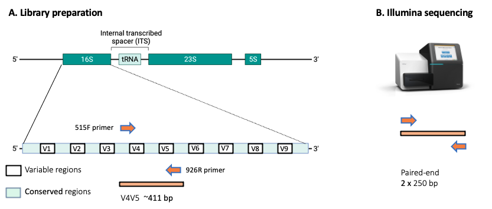

Welcome to the Bioinformatics Analysis of Microbiome Data¶
1. INTRODUCTION¶
We will be working with NGS data generated from 3 groups of mice: IL-10-/- (deficient), MUC2-/- (deficient), and wild-type mice.
1.1 Data type:¶
The data was obtained through targeted amplification of the V4V5 region of the 16S rRNA gene and paired-end sequencing on the Illumina Miseq platform, resulting in forward and reverse reads of 250 bp length (each).
 Figure 1. Figure 1. Simplified illustration of the genetic region amplified and sequenced. A) The bacterial 16SrRNA gene is part of the ribosomal RNA operon. B) The 16S rRNA gene spans over 1,500 bp and contains conserved regions (light green) as well as variable regions (white). In this study, we targeted the variable regions V4 and V5 using the 515F forward primer and the 926R reverse primer. The targeted region has an approximate length of 411 bp, but library preparation results in longer reads as barcodes are also added.